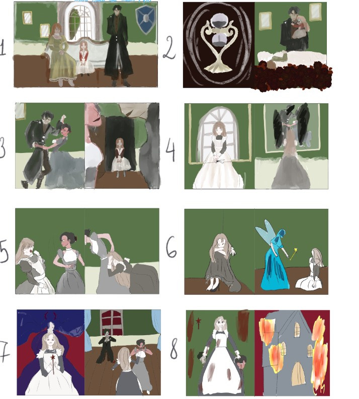
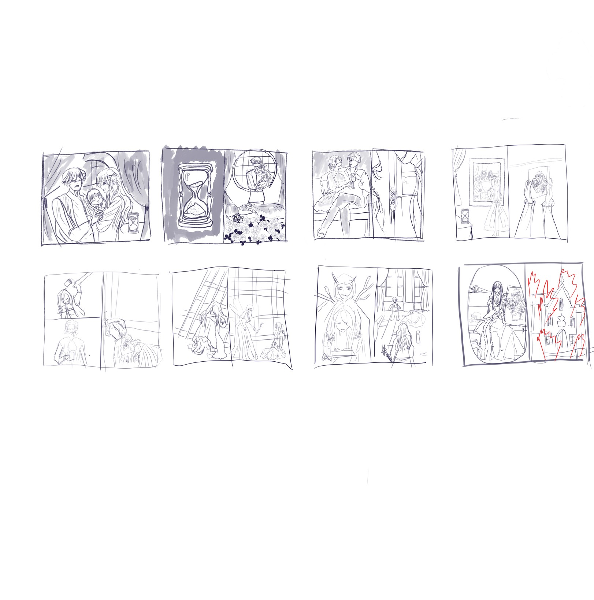
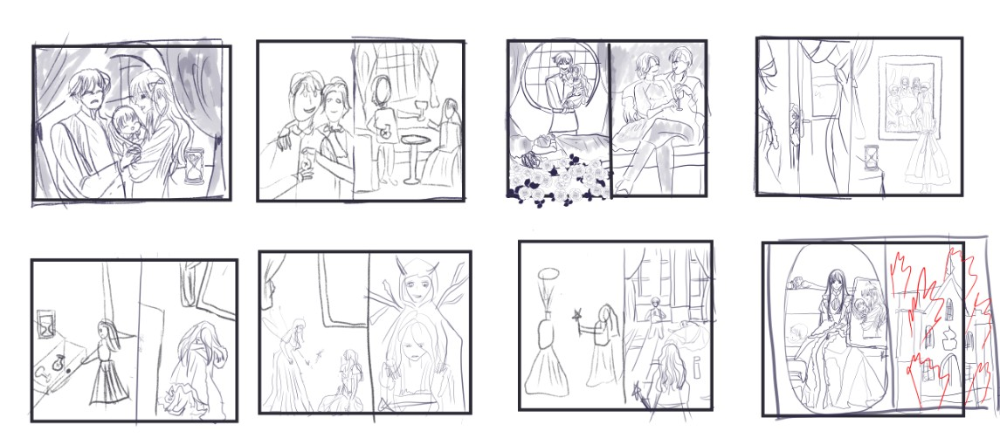
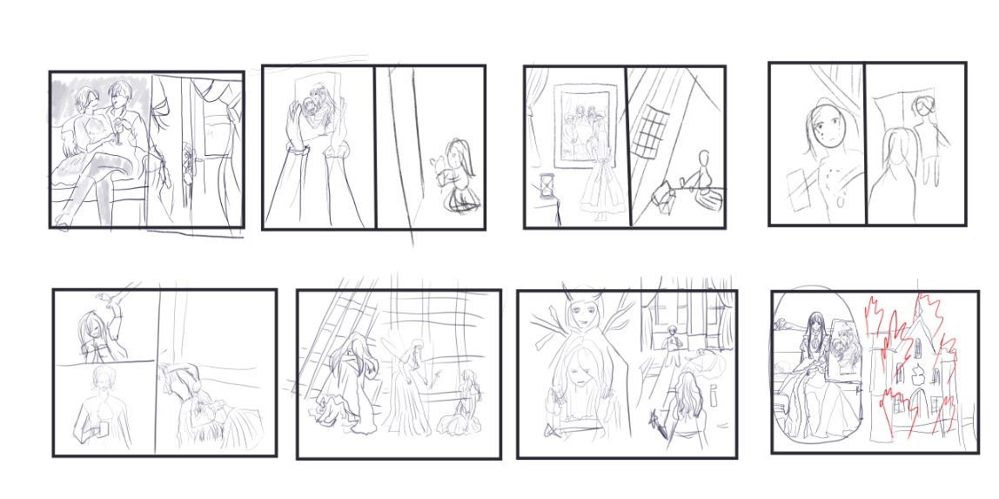
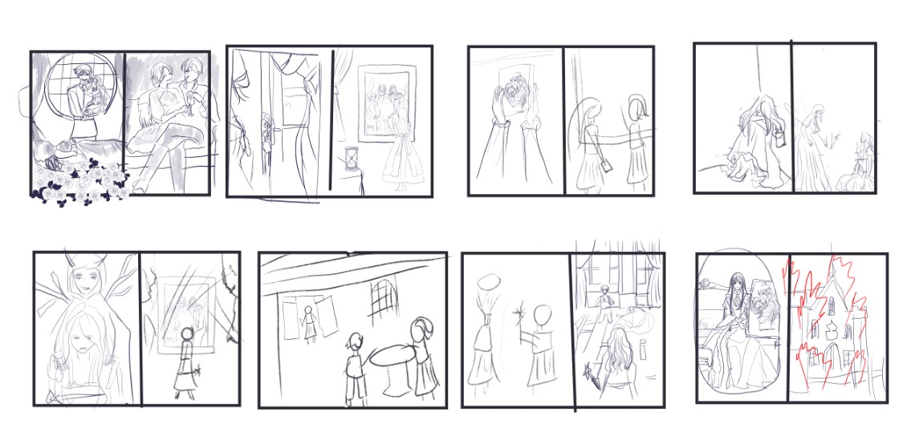

THE PROJECT
BASICBOOK was a solo project from a visual-storytelling course I took during my exchange in Münster. The brief was to tell a compelling story using only images, no text, and to carry it all the way through to a printed book. I should be upfront: this was essentially my first time drawing, so the project was as much about learning to think in pictures as it was about learning to draw at all.
THE CONCEPT
I chose Cinderella as my starting point, then took a deliberately dark turn to challenge myself. Instead of the familiar fairy tale, the story leans into resentment, a poisoning, and revenge, with a portrait of the mother as the emotional anchor that keeps coming back through the panels. Picking a story everyone already knows let me bend the beats and trust the reader to follow, even without a single line of text.
STORYBOARD
I worked the whole thing out in thumbnails first, blocking each beat as a rough panel before committing to anything finished. Looking back I probably put too much polish into this early phase, but laying the story out panel by panel was where the storytelling actually happened.

EXPLORING THE STORY FROM THREE ANGLES
A big part of the course was non-linear storytelling, so I drew the same story three different ways, each from a different point of view. The first follows the father as he plans to poison his wife. The second switches to Cinderella, making clear why she hates the stepmother and why her mother's portrait matters so much. The third focuses on how she carries out her revenge against the father and stepmother. Telling it three ways taught me how much the choice of viewpoint changes what a wordless story actually says.



WHAT I LEARNED
The biggest lesson was how to tell a compelling story without text, and how much a small detail in a panel can do to push the story forward. I also learned the practical side of printing a book so other people can actually hold it and read it.
I went in with very high expectations and made the classic first-timer mistake: I rushed to study drawing fundamentals like shape, perspective, and anatomy, then barely used them, and I lost sight of the fact that this was a storytelling course, not a drawing course. That cost me some deadlines and a bit of burnout. Even so, I am happy with the outcome, and I came away knowing a lot more about visual narrative than when I started.
HOW I MADE IT
The course ran as a set of phases, from a first idea to a printed book:
- Ideate: chose Cinderella as the starting point and gave it a dark turn to challenge myself.
- Storyboard: blocked the whole story out as rough thumbnail panels before committing to anything finished.
- Non-linear: drew the story three different ways, from the father's view, from Cinderella's, and one focused on the revenge.
- Reference: gathered references for the rooms, furniture, and the character designs.
- Final product: drew and coloured the chosen version into a finished book.
- Print: prepared the book so other people could hold it and read it.